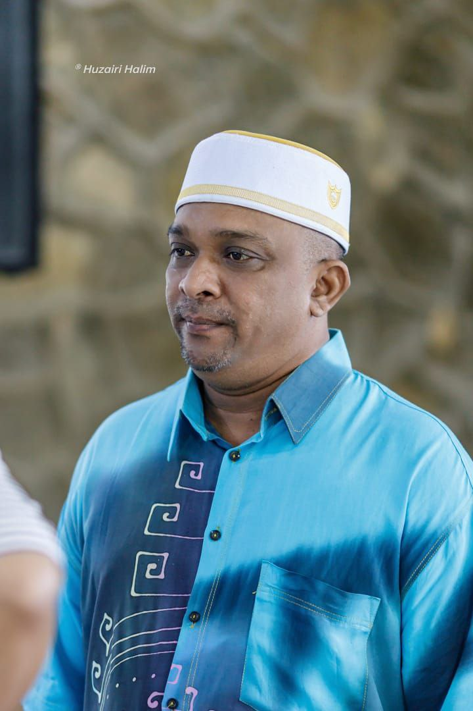
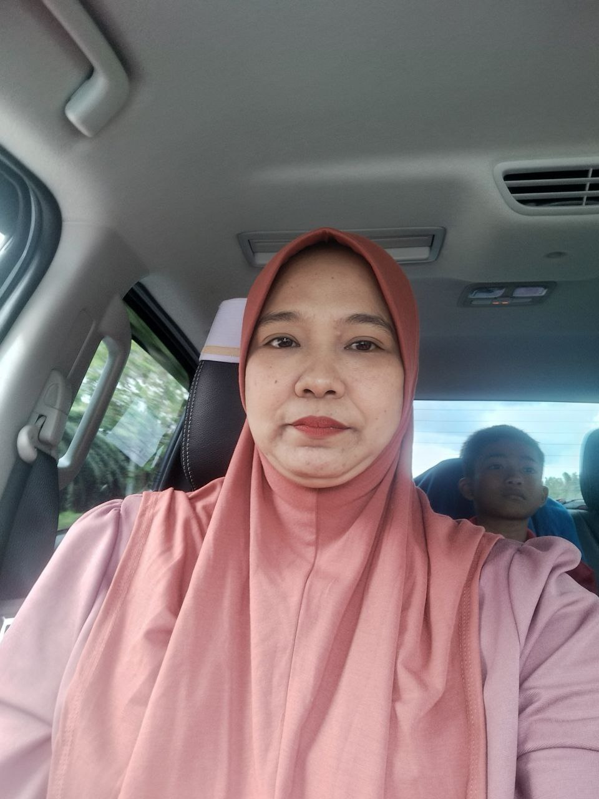
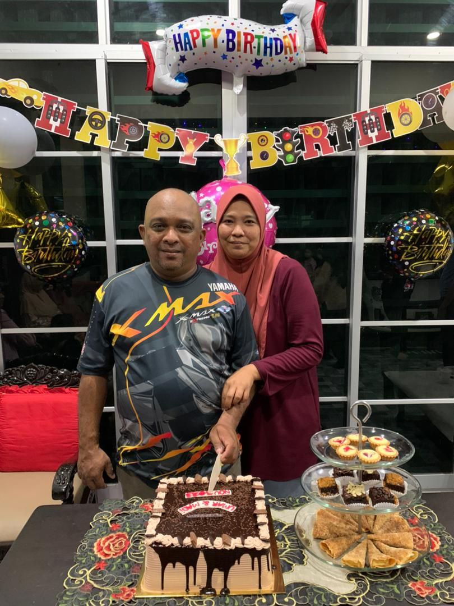
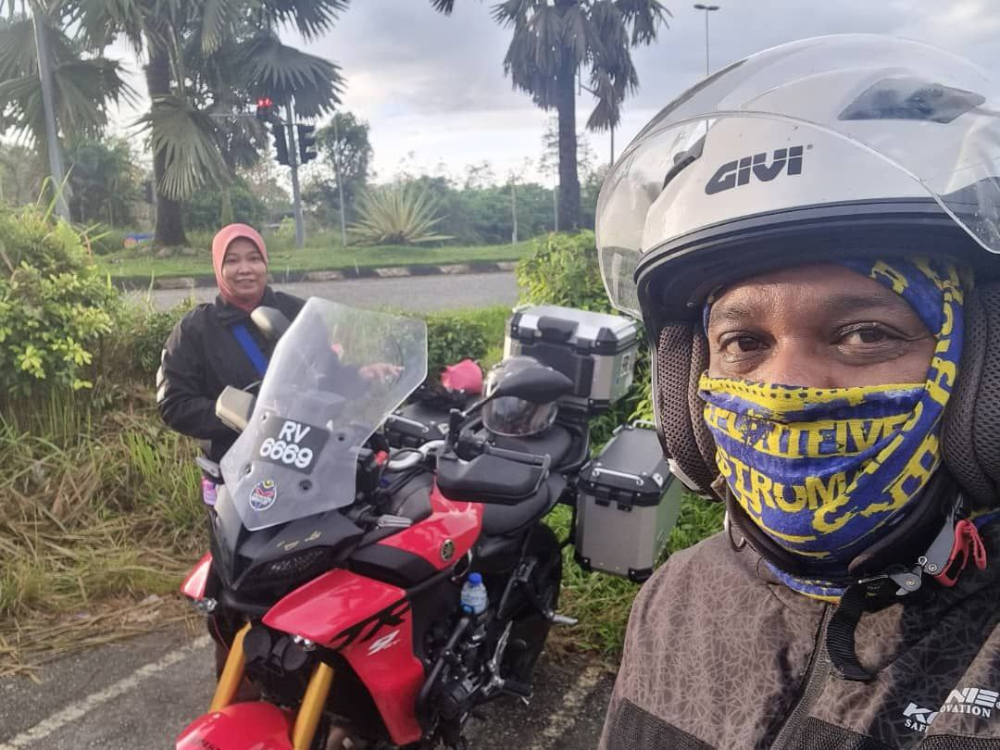
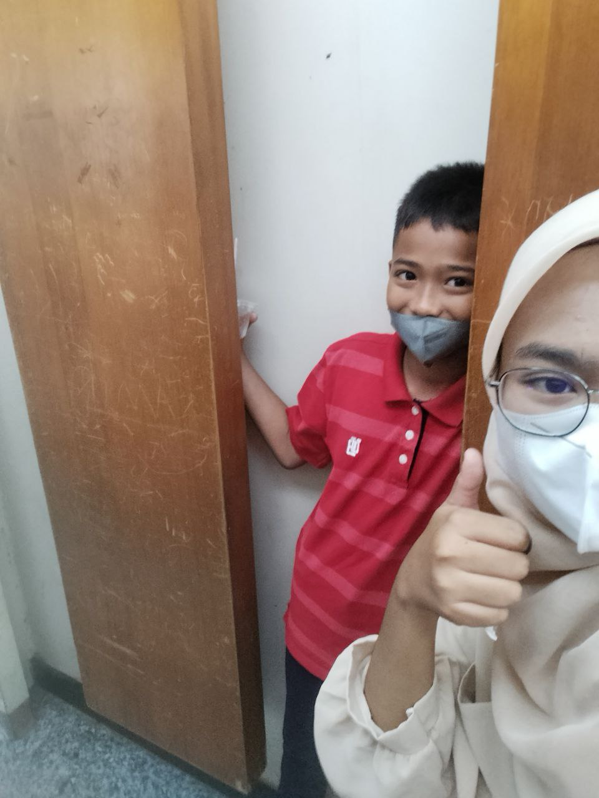
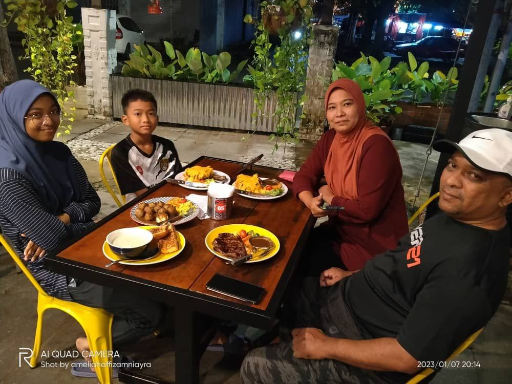
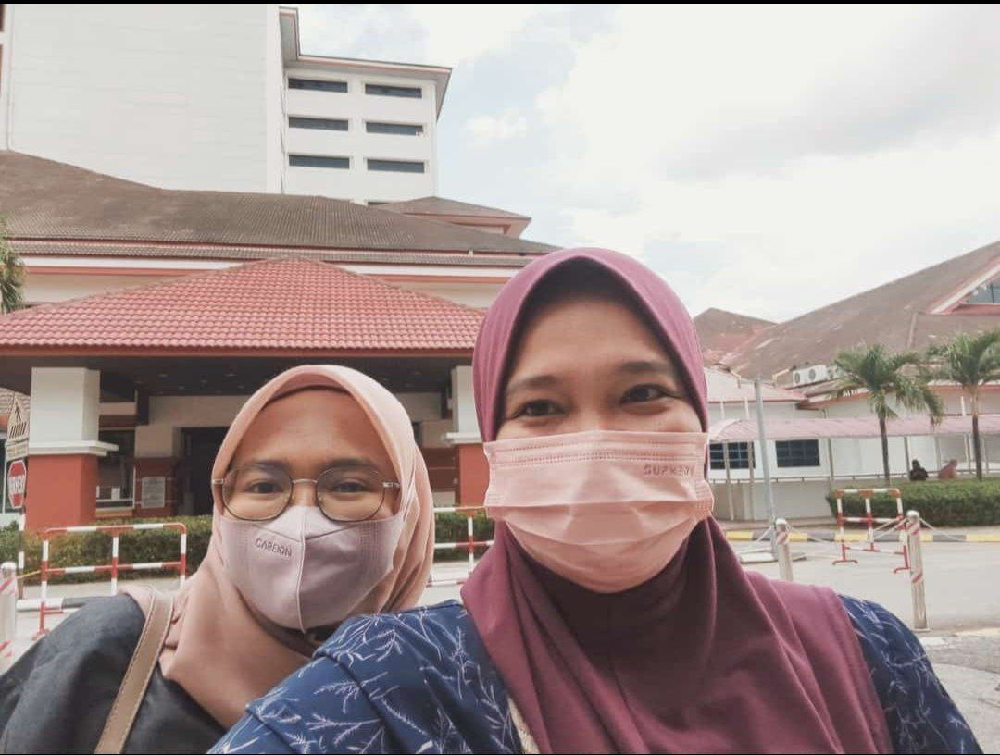

family


THIS IS MY FAMILY
MY KING AND QUEEN



My father's name is Nor Asmadi bin Ahmad and he was born in Kangar, Perlis. He was born on November 29, 1975. He married my mother in 2002 in September. My father works as a health care assistant at Tuanku Fauziah Hospital's Forensic Unit. He is the best father in the world. He always gives the best attention to his children. My father never neglected his children. My father can do anything especially to his family.
My mother's name is Rosnah binti Mat and she was born in Pendang, Kedah. He was born in 1978 on January 27. My mother works as a health nurse. She is the best mother in the world. He always wants his children to be successful people. He always advised me to study hard and get my Diploma on time. Mom's cooking is always delicious. No one can't beat. One of the reasons I love to eat all the time. My parents are great parents. I love them so much. I want to give the best for them. I don't want to disappoint my parents.
FAMILY PICTURES




Nur Alia Safiya is my younger sister. He was born in Perlis in 2007. He is 16 years old this year. He is a high school student. Next, my lil brother which is Nor Afiq Affandi. He was born in 2011 at Tuanku Fauziah Hospital. Now, he attends school at SK Paya. He always likes to eat either at home or outside. He likes cats. He is a sportsman at school and is very active. My two siblings are quite close and always play together and even watch movies together..